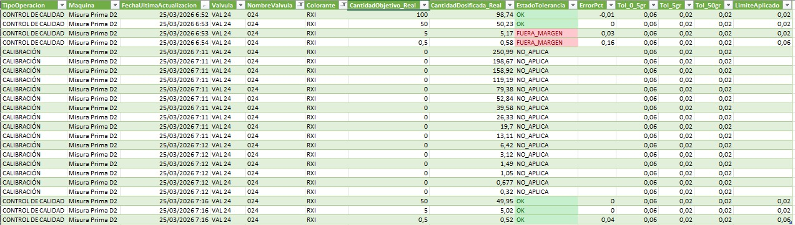

Del control diario al criterio preventivo del color
Histórico útil de controles y calibraciones Dromont para anticipar desviaciones antes de producir
El problema
En Dromont ya existe un control de calidad diario para los colorantes críticos, pero el dato operativo se usa casi solo para decidir si una válvula está OK o necesita recalibración en ese momento.
La tabla actual sobrescribe cada semana la información anterior. Eso permite trabajar cada día, pero impide construir memoria histórica y aprender qué colorantes se desvían más, cuáles se estabilizan tras calibración y dónde conviene intervenir antes de producir.
Qué ya funciona
Los operarios ya trabajan con una Excel conectada a la báscula Dromont que captura automáticamente el peso y compara el resultado con las tolerancias definidas por colorante.
Eso simplifica la operativa, evita errores de transcripción y convierte el control en un proceso ágil: si la medición está dentro de margen, se continúa; si no, se calibra y se vuelve a comprobar.

Qué propone la píldora
Pedro plantea dejar de tratar ese Excel como herramienta efímera y convertirlo en una fuente histórica de conocimiento.
El primer paso sería conservar y recopilar automáticamente los controles y calibraciones para generar estadísticas útiles. Después, cruzar esa información con ERP y mantenimiento para relacionar desvíos con cambios de bombas, electroválvulas, lotes o intervenciones mecánicas.
Qué decisiones permitiría
Identificar válvulas con baja incidencia para revisar si la frecuencia de control puede ajustarse.
Separar colorantes que se corrigen bien tras calibración de los que necesitan vigilancia estrecha.
Revisar límites a partir del histórico real y no solo del criterio teórico inicial.
Detectar válvulas que siguen fuera de margen tras calibración y escalar la incidencia con rapidez.
Qué aportaría al negocio
Pasar del control diario al criterio preventivo reduciría intervenciones tardías, mejoraría la preparación previa a producción y ayudaría a decidir antes cuándo ajustar, seguir, recalibrar o sustituir un componente.
Además, abriría la puerta a un panel de comportamiento histórico por colorante, con lectura técnica y predictiva para fábrica.
Acceso al contenido completo
Ver texto completo en PDF